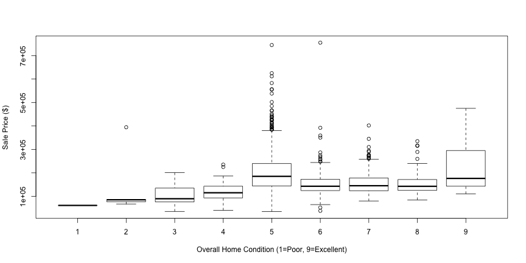

- Investment bank client
- Business Question: How do we optimally allocate investment dollars into mortgage-backed securities?
- Investigate and quantify impact of factors that drive home prices.
Prepared by Ken Wood,
Data Scientist - ROAR Marketing Concepts LLC
setwd("~/Desktop/Data Science with R/Developing Data Products/Week 4 Assignment/Week4Assignment")
library(tidyverse)
housingdata <- read.csv("housingdata.csv")
housingdata <- housingdata %>% select(lotarea,housestyle,overallcond,heating,
centralair,grlivarea,fullbath,halfbath,
bedroomabvgr,totrmsabvgrd,saleprice)
head(housingdata,n=3L)
## lotarea housestyle overallcond heating centralair grlivarea fullbath halfbath
## 1 8450 2Story 5 GasA Y 1710 2 1
## 2 9600 1Story 8 GasA Y 1262 2 0
## 3 11250 2Story 5 GasA Y 1786 2 1
## bedroomabvgr totrmsabvgrd saleprice
## 1 3 8 208500
## 2 3 6 181500
## 3 3 6 223500
boxplot(saleprice~overallcond,data=housingdata,
xlab = "Overall Home Condition (1=Poor, 9=Excellent)",
ylab = "Sale Price ($)")

fit <- lm(saleprice~grlivarea,data=housingdata)
plot(saleprice~grlivarea,data=housingdata,
xlab = "Total Above Grade Living Area (sqFt)",
ylab = "Sale Price ($)")
abline(fit,col=2)